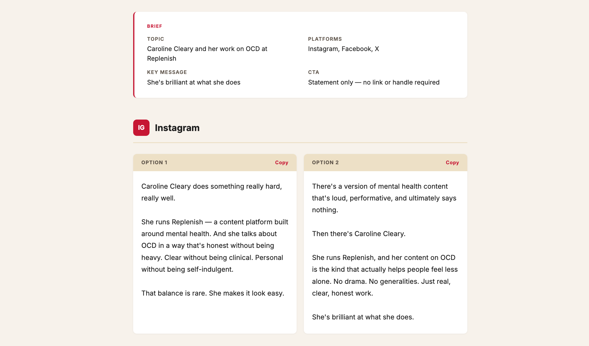

A journal about learning to use Claude Code.
Latest

4 April 2026
I wanted to see if Claude could help brainstorm social media copy that sounds like me, per channel, with two options to choose from.
Previous Entries